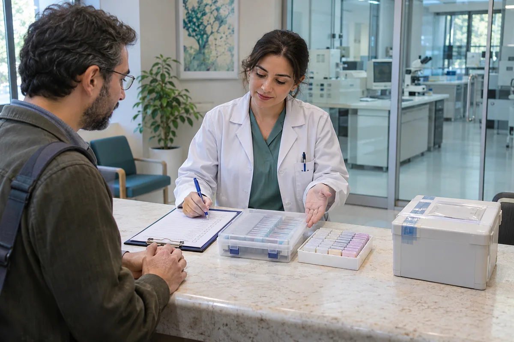

Start with the material a second reviewer actually needs
If a doctor asks to review tissue examined after an operation or biopsy in Türkiye, a photograph of the pathology report may be insufficient. Ask the receiving pathology service what it needs before requesting physical material from the original laboratory. The answer may involve stained glass slides, paraffin tissue blocks, additional prepared sections, the original report or a combination of these. Confirm the clinical question and the intended recipient first. This makes the request more useful than asking a clinic coordinator to send everything without knowing where it will go.
This guide concerns existing material held by a pathology service. It is not an instruction to collect fresh tissue, prepare sections yourself or send biological material in an ordinary parcel. Begin with your treating clinician and the laboratory that examined the sample. If a review abroad is proposed, raise the international-transfer question at the outset. Patient access to material and permission to move it across a border are separate steps. Keep clinical care moving while the laboratories establish a lawful and suitable review route.
Understand the report, slides and blocks
A pathology report is the pathologist’s written account of an examination. A slide carries prepared material for microscopic assessment. A paraffin block contains processed tissue from which a laboratory may prepare further sections. These are different parts of the diagnostic file; receiving one does not establish that the others have been supplied. Ask the receiving specialist to specify the relevant material using the laboratory’s own terminology. Do not choose tests or decide how many sections should be cut based on a general internet checklist.
An illustrative situation is tissue removed during breast reduction. A doctor abroad may want to review the original diagnosis, compare the recorded sampling sites and decide whether further assessment is appropriate. The patient should ask which accession numbers, reports and material are needed, rather than assuming that the surgeon personally stores every item. A specialist referral service may request slides and blocks directly from the original hospital; UCLH describes that approach for its own sarcoma pathway. Each receiving service’s acceptance process must be checked separately. UCLH’s clinician referral information
Find the laboratory that first examined the sample
Read the report header and signature panel. Note the hospital, laboratory name, reporting pathologist, report date and laboratory reference. Compare these details with the operation record and invoice. The place where surgery occurred may have sent material to an outside pathology provider. Ask the hospital to identify the actual laboratory and the department handling consultation requests. A booking agency can help route the enquiry, but its knowledge of the package does not establish custody of the slides or blocks.
If you have only a discharge summary, start by asking whether tissue was submitted for pathology and, if so, for the associated report and laboratory reference. Avoid assuming that every cosmetic procedure produces retained pathology material. If an intermediary gives you two different laboratory names, ask for the report that connects the sample to the responsible service. Record unresolved differences plainly. Our guide to requesting medical records can help obtain the operation note and related documentation needed to trace the sample.
Ask for consultation through the current framework
Article 11(14) of the laboratory regulation published on 24 October 2025 provides a pathology consultation process using the consultation request form. It addresses written patient or legal-representative requests, delivery of consultation material to the patient or representative, and other appropriate transfer methods. The current text should be used when discussing the procedure; the 2024 regulation was repealed. Ask the original service which form and identity or representation documents it needs for your particular request. Current laboratory regulation, Articles 11 and 30
Make the purpose explicit: you seek material for a second pathology opinion, not cancellation of the original report or an informal opinion from reception staff. Give the receiving service’s details and ask whether direct laboratory contact would help. If a relative will collect material, establish their authority in advance and obtain the collection instructions in writing. Do not send somebody to the hospital expecting a sensitive handover to proceed solely because they know your name and operation date.
Get acceptance from the receiving service before release
Contact the proposed recipient through its verified hospital or laboratory channel. Ask whether it accepts cases from outside its organisation, whether a clinician must refer you, and who will supervise the review. Confirm the department, delivery address and named administrative contact. Ask whether a referral letter, local registration, advance payment or funding decision is needed. A specialist’s willingness to discuss your case does not necessarily mean the laboratory has opened a file or agreed to receive a shipment.
Obtain its material requirements in a form that can be forwarded to the original laboratory. This might identify the relevant report, required slides or blocks, the reason for review and any additional clinical information. Ask about the service’s arrangements for returning borrowed material. The Robert Jones and Agnes Hunt hospital’s user manual, for example, describes a consultant referral letter, labelled material and protective packaging for its own referral process. Those are useful questions to raise, not a universal admission standard for every laboratory. RJAH cellular-pathology user manual
Describe the requested material precisely
Create a short request identifying the patient, procedure or biopsy, collection date if known, laboratory accession number and intended second opinion. Attach the receiving service’s requirements rather than rewriting technical instructions from memory. Ask the original pathologist or laboratory team to confirm what exists, what can be supplied and what needs further clarification. If several operations occurred during the same trip, list them separately. “All my samples from Istanbul” is much harder to fulfil accurately than a request linked to named reports.
For example, two reports might relate to different sides of the body or different dates. Keep their identifiers distinct even if the clinical concern feels like one problem. A block suffix can carry information that is lost when a reference is shortened. Ask staff to explain any unfamiliar abbreviation instead of relabelling the material yourself. A receiving laboratory may have its own rules for matching labels and requests; Manchester’s published guidance illustrates why a unique laboratory number and matching identifiers matter. Manchester’s material-identification guidance
Preserve the connection between the sample and its history
Ask for the final report and any supplementary report associated with the material being reviewed. Explain whether the receiving clinician also needs the operation note, biopsy request or relevant clinical history. A translated report should remain linked to the Turkish original and the same accession number. Keep spelling variations in the patient’s name visible in a covering explanation if they may affect matching. Do not erase an original identifier to make every document look uniform.
A simple index can list each report, its date, its reference and the corresponding material described by the laboratory. Keep this index in your own working file and ask the professionals to resolve technical discrepancies. If a report describes several submitted containers, do not assume that one collected block represents all of them. The useful question is whether the supplied material meets the receiving specialist’s stated needs. That question can be answered by the laboratories without requiring you to interpret tissue appearance or make a diagnosis.
Plan a review abroad through the authorised laboratory
Article 11(24) reserves overseas dispatch of biological material for testing to licensed or authorised laboratories and makes entry or exit subject to Ministry approval. A domestic handover therefore does not establish permission to carry slides or blocks abroad. Tell both laboratories the destination and ask who will arrange the applicable approval, documents and transport. Obtain that answer before booking collection or a courier. Laboratory regulation, Article 11(24)
Ask the receiving service to confirm its country’s import and acceptance requirements through its own professional process. Ask the Turkish laboratory to explain the authorised route it can provide, expected preparation time and any documents the patient must sign. Keep the response with the consultation file. A courier’s willingness to carry a parcel is not a substitute for the relevant medical-transfer approvals. Avoid treating a travel agent’s assurance that “patients do this all the time” as confirmation that the proposed shipment is permitted.
Agree the handover and transport arrangements in writing
Before collection, ask what will be released, who will package it, who is responsible for dispatch and how receipt will be confirmed. Request an inventory that identifies the material and the destination. Let the laboratories and authorised carrier determine packaging, temperature protection and handling for the particular material. Do not improvise with household containers or apply generic advice intended for another specimen type. Prepared slides, paraffin blocks and fresh samples do not have interchangeable transport requirements.
At an authorised handover, compare the inventory with the externally visible labels and count the listed packages with staff. Ask them to resolve an apparent mismatch before signing a receipt. Do not open a sealed package merely to take a photograph or change the way items are arranged. Keep the collection receipt, dispatch reference and contact details for the receiving department. If the package arrives damaged or delayed, notify the professionals promptly and ask for their instructions, preserving the delivery information without attempting to repair the material yourself.
Ask about costs, availability and the expected sequence
Request an explanation of any proposed charge and what it covers. Retrieval, preparation of further sections, translation, professional consultation and authorised transport may be separate services. Ask which party invoices each item and whether the receiving review can proceed before the administrative arrangements are complete. Obtain a written estimate where available, but do not assume that a quotation from one service includes the other laboratory’s fees. Keep payment evidence associated with the correct service and request a receipt.
Discuss the sequence rather than relying on one optimistic completion date. The original laboratory may need to retrieve material, clarify the receiving request or arrange approval; the receiving service may then register and assess the case. Ask which stage is currently pending and who can answer the next question. If a consultation is clinically time sensitive, ask your treating clinician to communicate that need directly. A commercial coordinator should not be the only person deciding whether an appointment can safely wait for administrative completion.
Distinguish retained material from a missing whole specimen
The regulation specifies different retention periods: sampled tissue after reporting, slides, blocks and molecular-analysis records are not kept for identical lengths of time. Article 26(15) provides one month after reporting for sampled tissues, ten years for slides and twenty years for blocks. Ask what remains available for your accession number. The absence of the original whole specimen does not by itself establish that retained slides and blocks are missing. Laboratory regulation, Article 26(15)
If staff say that material is unavailable, ask for a specific explanation: was it never created, exhausted during testing, transferred, awaiting retrieval or no longer held? These possibilities lead to different next steps. Record the response without assuming misconduct. Ask the receiving specialist whether the available report or remaining material can answer the clinical question, and whether another route is needed. Do not request a new invasive procedure merely to replace an administrative gap without discussing the clinical reasons, alternatives and risks with a qualified doctor.
Clarify an offer of a digital review
If the original service offers a digital consultation instead of releasing physical material, ask the receiving pathologist whether that option suits the question being reviewed. A PDF report, a photograph taken through a microscope and a digital slide prepared for professional assessment are different things. Describe exactly what has been offered and let the specialists determine whether it is adequate. Ask which service will make the images available, who can access them and whether the receiving department has agreed to use that system.
For example, a patient might receive an email saying that “images are online” without any instructions for the external reviewer. Forward that administrative message to the verified receiving contact and request clarification before purchasing a separate review appointment. Record any access expiry, reference number or technical obstacle. Do not distribute login credentials or upload sensitive material to a public image-sharing account to solve an access problem. Ask the laboratories for their approved exchange method. If a digital route cannot answer the clinical question, return to the written discussion about suitable material and the authorised transfer arrangements.
Follow the consultation through to receipt and return
Confirm that the receiving department has registered the correct material and can link it to your referral. A carrier’s delivery confirmation may establish that a package reached a building, while the laboratory still needs to check and register its contents. Ask for the relevant receiving reference and use it in subsequent correspondence. Keep the original laboratory’s reference too. This is especially useful when the hospitals use different record systems and neither recognises the other organisation’s numbering format.
When the second report is issued, ask your treating clinician to explain its significance and any limitations. Keep the original and consultation reports together rather than replacing one with the other. If opinions differ, the doctors may need to clarify sampling, clinical context or additional investigations. Ask who will arrange return of material and request confirmation when the original service receives it. A borrowed block should not disappear into a household filing cabinet simply because the appointment has ended.
Keep a second opinion separate from a finding of fault
A pathology review may assist ongoing treatment or clarify a diagnosis. It does not automatically determine whether an earlier surgeon, hospital or pathologist acted negligently. If you are also considering a legal review, preserve the referral question, reports, correspondence, inventories and transfer history. Describe any missing material or delay factually, including what was requested and the response received. Our independent medical-expert guide explains why a clinical second opinion and a court’s assessment of liability serve different purposes.
Consider a patient who receives a consultation report with different wording. The practical next step is to ask the reviewing clinician what the difference means and whether the same material was examined. A lawyer can then consider the records in their proper context, alongside timing, communication, treatment decisions and any alleged harm. Avoid asking a laboratory receptionist to certify that a malpractice claim will succeed. A reliable chain of documents is more useful than a premature conclusion about responsibility.
Prepare one clear request and a workable contact plan
Before sending the request, check that you can identify the original laboratory, relevant report, receiving service and purpose of consultation. Include a secure way to contact you, explain any representative’s role and ask which form must be completed. State that a proposed international review needs the laboratory’s authorised transfer arrangements. Keep your own checklist of the next action, responsible contact and evidence of completion. This reduces repeated calls that ask for progress without resolving the question currently blocking release.
If the process stalls, send a concise follow-up identifying the outstanding step and attach the earlier response. Ask whether the obstacle is identification, technical suitability, availability, payment, approval or recipient acceptance. Different obstacles need different solutions. Medical Law Türkiye can assess a records-access or proposed legal-review issue within an agreed engagement, while your clinicians and laboratories remain responsible for diagnosis and material handling. The right-to-second-opinion topic page provides related legal context for organising a review without losing sight of ongoing care.
Discuss your situation
Share a brief outline with our legal team. Please do not send full medical records or identity documents in the initial enquiry.